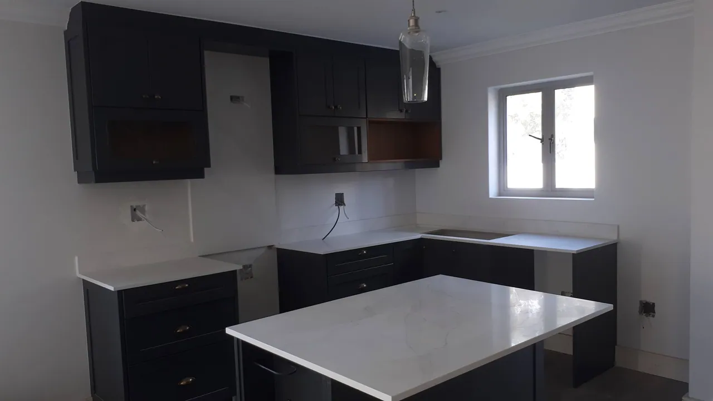

Projects / Residential work & finishes
Residential work & finishes.
Homes, streetscapes and the details that bring residential spaces together.
All projects ↗Kitchen finishes 
Townhouse exteriors
From the site
A closer look at residential work.
Explore exterior finishes, boundary walls and the stages of building a home.

Planning something similar?
Tell us your location, stage and the type of work you need.
Discuss your project ↗